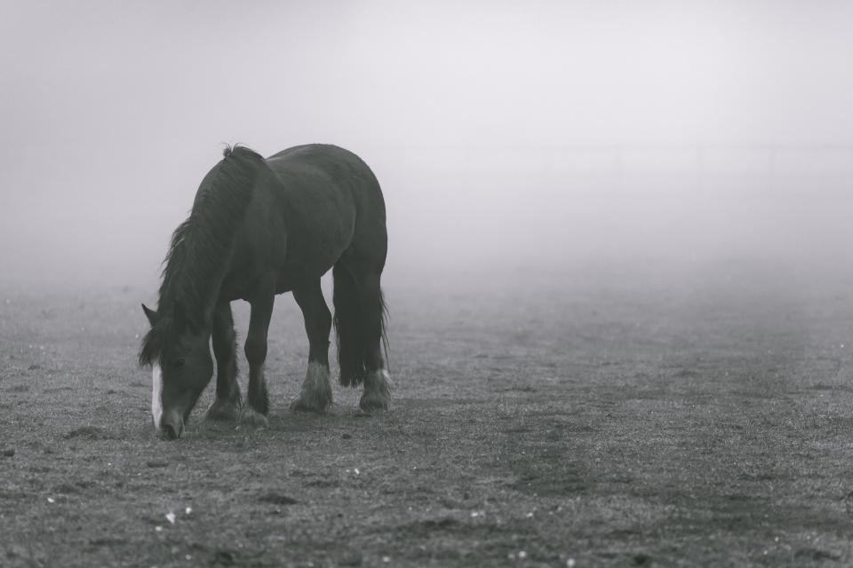
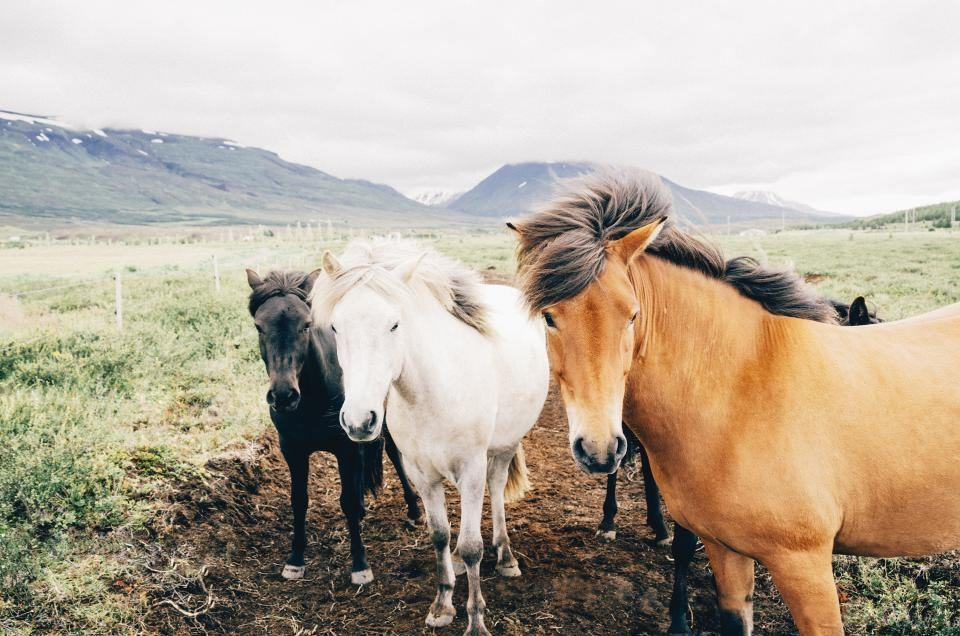
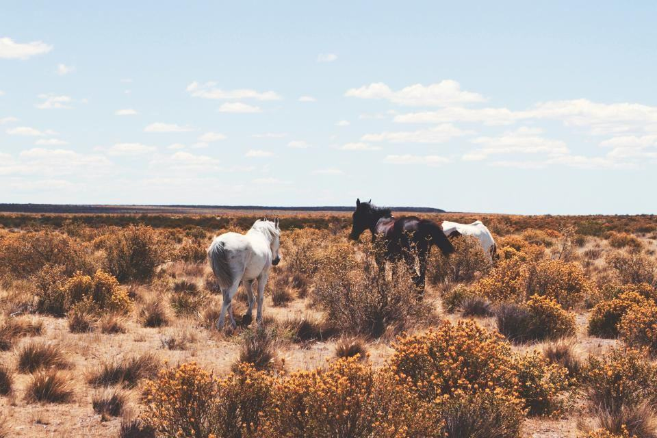
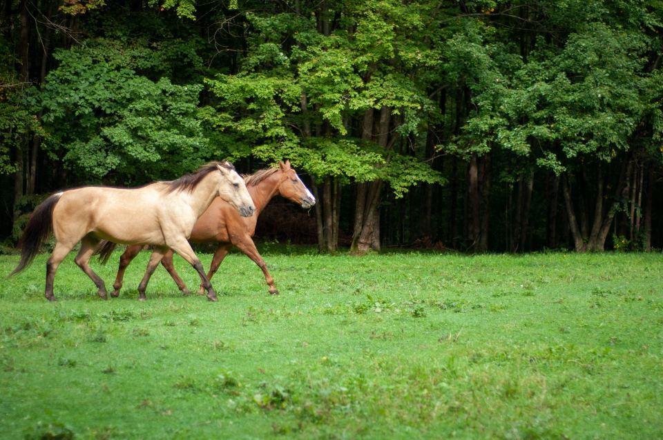
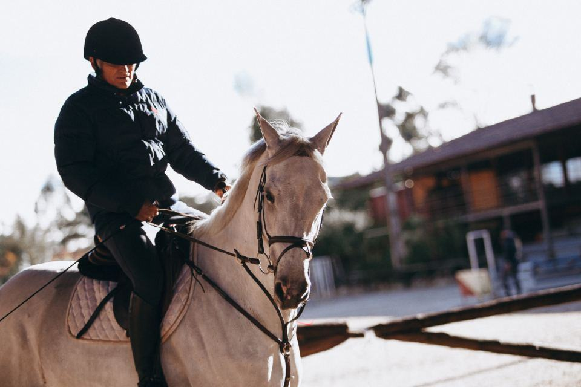

Tjänster
I dag är vi fyra: Kim, gesällerna Rasmus Hed och Tove Lindahl, och lärlingen Ali Demir. Vi skor omkring 320 westernhästar, främst i Västra Götaland och Halland, och är på plats som showhovslagare vid ett tiotal westernshower varje år.
Vilken gren rider du?

Reining
En reininghäst ska glida flera meter i stoppet utan att fastna eller tappa balansen. Det kräver breda, helt släta sliders bak, lagda med förlängd trakt och avrundad tå, och ett framben som skos för att vända snabbt i spinnen.
Vi anpassar sliderns bredd efter hästens nivå, ryttarens erfarenhet och vilken arena nästa show går på.

Cutting och ko-grenar
I cutting och working cow arbetar hästen lågt och explosivt framför en kalv. Skorna ska ge grepp utan att låsa leden, och hovarna måste vara i balans för att klara snabba sidoförflyttningar.
Vi samarbetar med två ranchanläggningar i Halland där hästarna tränas på ko.

Trail, ranch och fritid
Många westernhästar tävlar aldrig men rids i skog och på grusvägar runt Bohuslän. De får vanliga skor eller går barfota, verkade efter westernridningens takt och underlag.
Hälften av våra hästar är fritidshästar och appaloosor som aldrig sett en show.

Showservice
Vid westernshower står en av oss vid arenan från första till sista klass. Vi spikar lösa sliders, byter skor mellan grenar och ger råd om sliderlängd när underlaget ändras under dagen.
Showservice bokas av arrangören eller av ett stall som har flera hästar på plats.
Från gren till show
- 1

Gren och nivå
Vi frågar vilken gren hästen tävlar i, på vilken nivå och vilka shower som är planerade.
- 2

Se hästen arbeta
Första gången vill vi se ett stopp eller en vändning på din arena innan vi bestämmer skor.
- 3

Skoning efter grenen
Sliders, cuttingskor eller trailskor läggs varma och anpassas efter hästens rörelse.
- 4

Till showen
Vi lägger skorna en vecka före show och finns på plats om något lossnar.
Utbildade i Sverige och Texas
- Gesällbrev i SverigeKim, Rasmus och Tove har gesällbrev i hovslageri.
- Utbildning i USAKim gick tre år som lärling hos en hovslagare för reiningstall i Texas.
- Godkända showhovslagareAnlitade av svenska westernförbund som officiella hovslagare vid shower sedan 2017.
- Försäkrade på tävlingsplatsenFörsäkring som gäller både i stallet och på tävlingsplatsen.